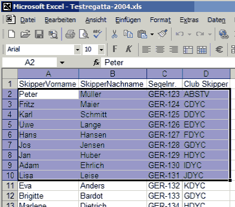
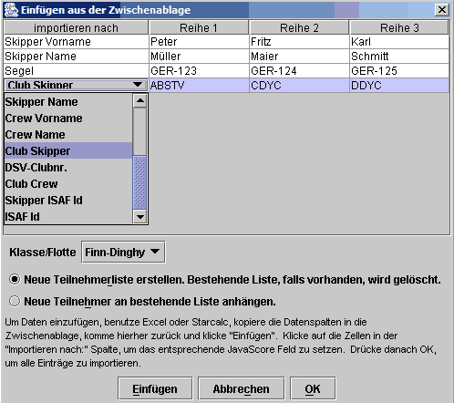

Es gibt drei unterschiedliche Dialoge zum Datenimport: Teilnehmer importieren, Ergebnisse importieren und Bahnmarken-Rundungen importieren. Alle drei Dialoge arbeiten ähnlich. Im folgenden wird der Import-Ablauf beispielhaft gezeigt.
Der Dialog ermöglicht den Import aus einer EXCEL oder STARCALC Tabellenkalkulation nach Javascore. Es sollte vorher eine Regatta in Javascore erstellt werden oder schon vorhanden sein.
Hier sind die Schritte:
(1) Auf der Abbildung 1 sieht man in jeder Reihe des
Tabellenblatts einen Teilnehmereintrag mit den zu importierenden Daten (Skipper Vorname, Skipper
Nachname, Crew Nachname, Bug, Boot usw.). Auf dem Tabellenblatt alle zu importierenden Einträge
markieren und dann kopieren. Sie befinden sich dann in der Zwischenablage.

(2) Danach in Javascore den Import Dialog aufrufen mit 'Datei --> Import ->Teilnehmer (oder Ergebnisse, oder Rundungen). In diesem Dialog (Abb. 2) muß man auf 'Einfügen' klicken und Javascore erstellt eine Tabelle mit den Daten aus der Zwischenablage. Nun steht in jeder Spalte ein Datensatz.
(3) In der Abb.2 zeigt die Tabelle links eine Spalte mit Auswahlboxen, in dem die Datenzuordnung in Javascore festgelegt wird. In diesem Beispiel sind die ersten beiden Variablen 'Skipper Vorname u. SkipperName' schon gesetzt und die Variable 'Club Skipper' ist gerade markiert.
(4) Jetzt muß noch die Klasse/Flotte ausgewählt
werden, in die die Teilnehmer importiert werden sollen, in diesem Beispiel 'Finn-Dinghy' und es
muß definiert werden, ob eine neue Liste erstellt oder eine bestehende Liste ergänzt
werden soll.
ACHTUNG: Wenn die Regatta schon Teilnehmer
in anderen Klassen/Flotten enthält muß unbedingt 'Neue Teilnehmer an bestehende Liste
anhängen' gewählt werden. Anderenfalls würden die schon bestehenden Teilnehmer gelöscht!
(5) Wenn alle Datenvariablen gesetzt sind, werden durch Klicken der OK Schaltfläche alle Daten nach Javascore importiert.

Wenn Wettfahrt Ergebnisse importiert werden, sollten es die Zieleinlauf Positionen sein, nicht die erzielten Punkte. Die Strafen müssen über ein separates Feld eingegeben werden.
Es wird empfohlen mindestens Segel-Nr. oder Nachname des Skippers in den Import einzubeziehen.
Mit der 'Abbrechen' Schaltfläche kann der Import jederzeit abgebrochen werden.